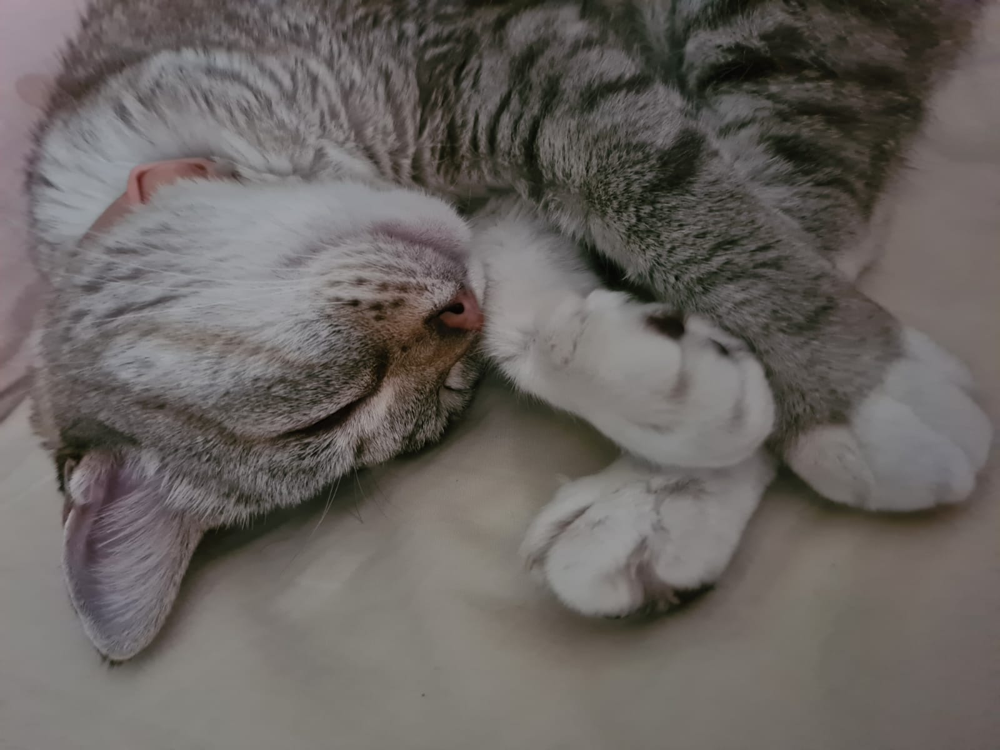
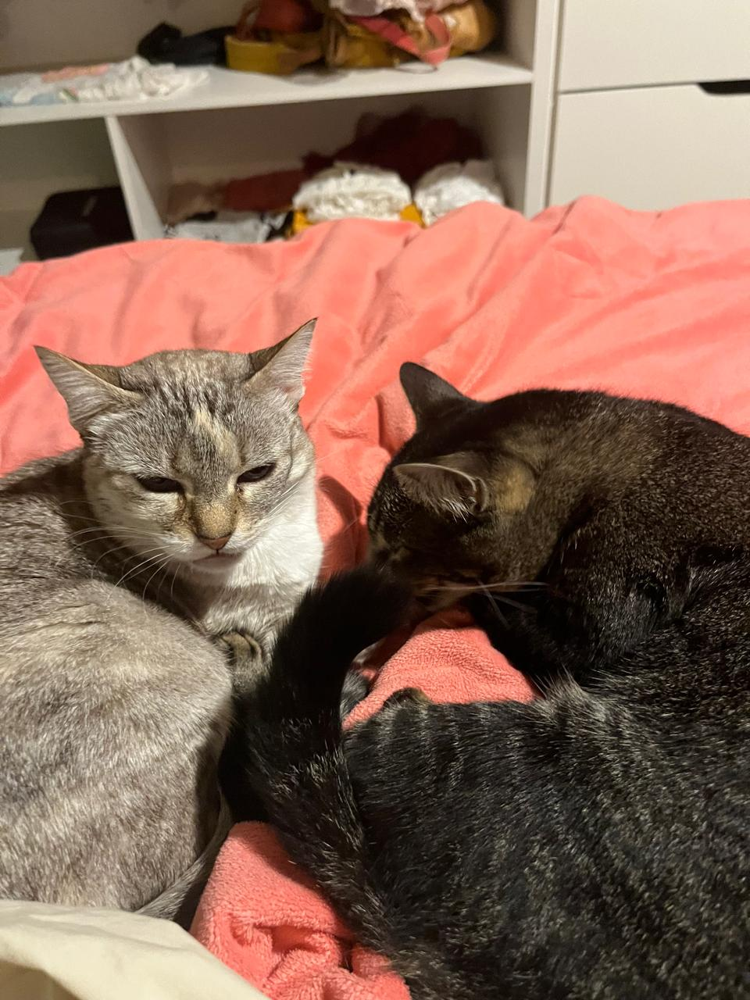
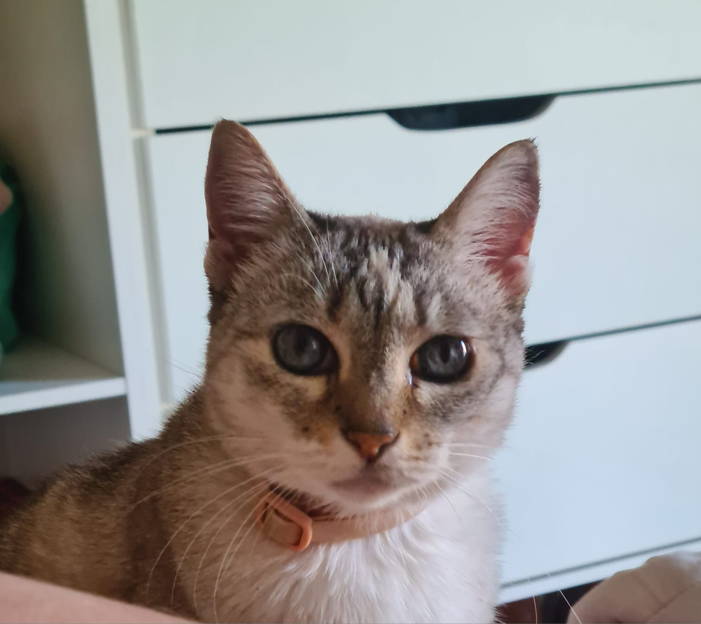
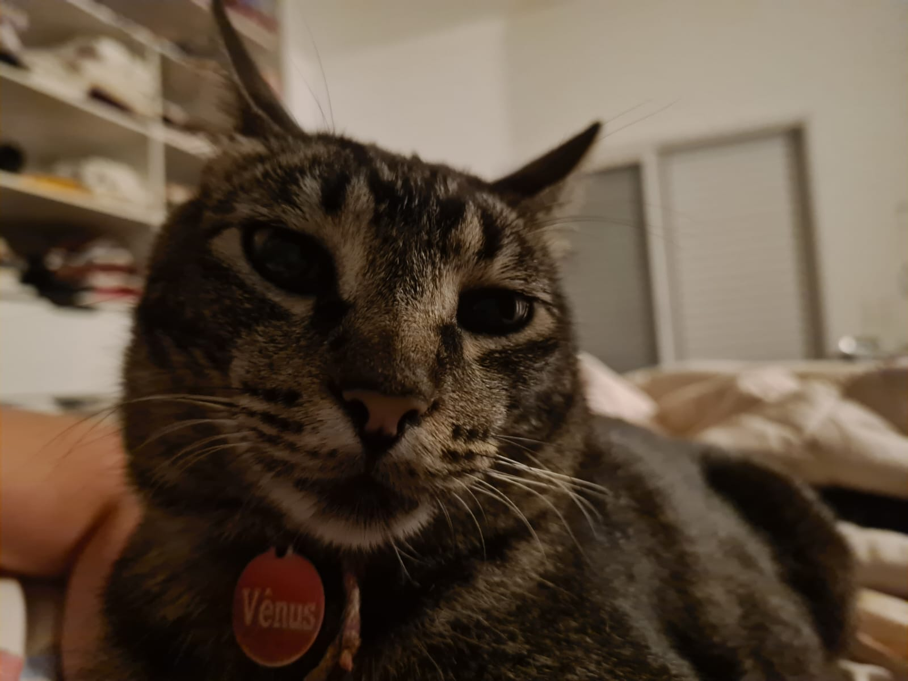
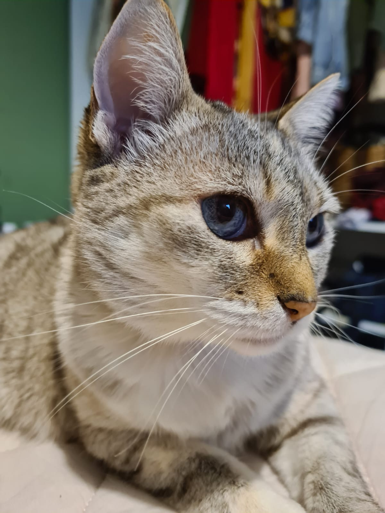
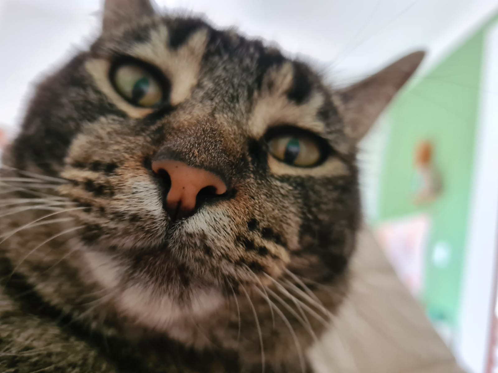
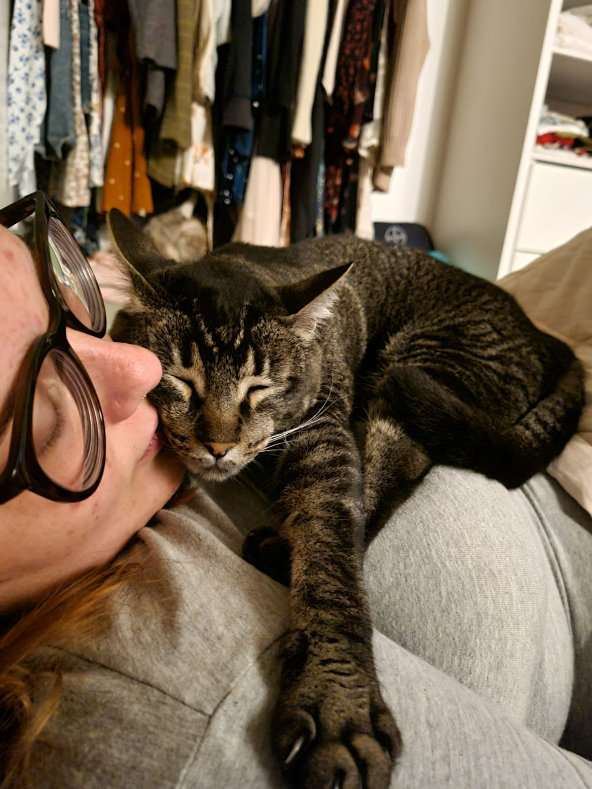

Um universo de amor, ronrons e patinhas fofas.

Luna foi adotada já adulta e hoje tem por volta de 7 anos, é muito carinhosa e comilona, adora tomar banho de sol e fazer suas caminhadas matinais.
Ver Fotos
Tranquila e carinhosa, é bem desconfiada perto de desconhecidos mas ama ficar perto de suas donas e receber carinho no queixinho.
Ver Fotos

